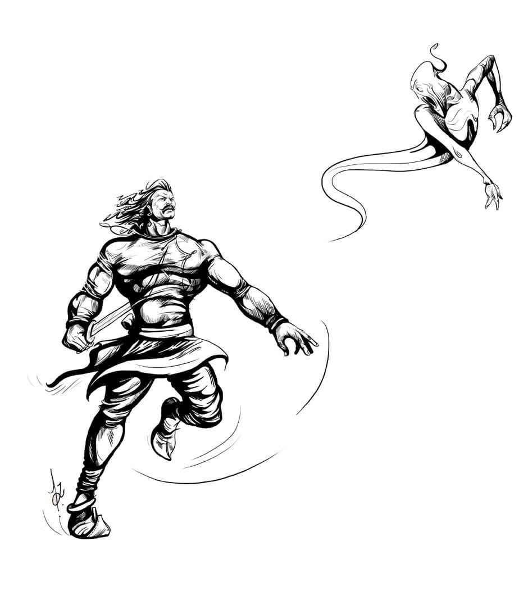

14. Varmaalaa
|
|
As Vikramaaditya walked away from the tree, Vaitaal was silent for some
distance, but then he again started speaking - "Listen now, To listen to your
40
justice I tell you a story. It is just to pass time, listen to it and do justice."
Vaitaal started his story and Vikram started listening quietly.
|
|
Vaitaal said - "There lived a princess in Avantee Desh. Her name was Shashi.
She was very beautiful. As she grew up, many proposals came for her, but the
king of Avantee was unable to decide to whom to marry his daughter. After a
while the princes themselves started coming to the king and ask his daughter's
hand.
|
|

|
One day it so happened that the king was sitting in his court, that his
gatekeeper informed him that the prince of Chol Desh wanted to see him. The
king called him with respect and asked the reason of his coming. He expressed
his desire to marry the princess. Chol Desh was a very mighty kingdom in
those times, so the king had to think about it. He said to him - "Please you
stay in our special guest house, we will consult the princess and then only we
can reply you. By the way what is your specialty?" The prince said - "I am a
good archer. I can shoot "Shabd-Vedhee" (shooting an arrow just only
listening by sound) arrow and I don't miss my target." And the prince was
sent to the guest house.
|

|
|
Page 14 Next Page
|